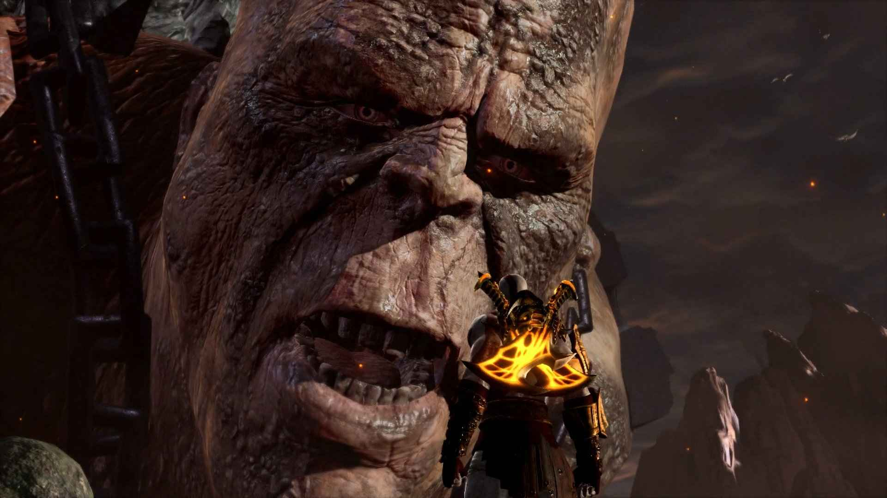

Вторая часть закончилась словами «Конец начался». В первой же сцене Кратос вместе с титанами забирается на Олимп, однако завершить восхождение ему не удаётся, у богов Олимпа ещё достаточно сил, чтобы противостоять «призраку Спарты» — его сбрасывают с Олимпа в самые глубины — ко входу в царство Аида. Кратос вынужден начать новое восхождение, попутно собирая новые силы для мести. Ему предстоит убить оставшихся богов и собрать их силы воедино для убийства Зевса.
Кратос, сидя на Гее, забирается на Олимп. Ему препятствует в этом сначала Водный Жеребец Посейдона, а затем и сам Посейдон — бог морей. После ожесточённой битвы Кратос убивает Посейдона: море резко поднялось и затопило многие города, потому что повержен бог, контролировавший моря. Кратос поднимается на Олимп и собирается убить Зевса, однако тот находит силы, чтобы сбросить с Олимпа Гею и Кратоса. Гея цепляется из последних сил за гору, при этом она говорит Кратосу, что это битва титанов, а не его битва. Кратос не собирается лишаться своего права мстить, о чём заявляет Гее. Не имея больше возможности держаться на Гее, Кратос падает в подземный мир Аида.
Если в первой части Кратоса на его пути вели боги Олимпа, а во второй титаны, то в третьей части его путеводителем стала Афина, которая обрела новую сущность, пожертвовав собой ради Зевса. По её словам, теперь Афина поняла, что «пока Зевс жив, у людей нет надежды». Кратос должен уничтожить Пламя Олимпа, которое является источником сил Зевса. Афина дала ему Клинки Изгнанника, которые должны указать путь к Пламени Олимпа. Кратос выбирается из подземного царства, по пути заполучив себе Лук Аполлона, который был у Пирифоя — Аид обрёк его на вечные муки (за то, что Пирифой хотел забрать Персефону у Аида), заключив в терниях. Кратос сжёг колючую преграду вместе с самим Пирифоем и забрал себе лук. Кратос встречает Гефеста — бога-кузнеца, который рассказал ему о своей дочери — Пандоре. Когда-то он создал её, но Зевс отнял Пандору у него. Кратосу немного удается добиться от Гефеста, но он узнал, что Пламя Олимпа смертельно для каждого, кто коснется его. Выбираясь из подземного мира, Кратос убил и самого Аида, получив его оружие — Когти Аида и поглотив душу Аида. Души подземного царства освободились от его гнёта.
Продолжая своё восхождение, Кратос видит преграждающую его путь Гею, которая зацепилась рукой за гору. Кратос помнил, что Гея не хотела давать ему право убить Зевса и поэтому сказал: «Ты нужна, пока полезна». Без лишних колебаний он отрубил ей кисть руки, и Гея упала вниз. В дальнейшем Кратос убивает бога солнца — Гелиоса. Он сбивает его из баллисты, когда тот летел на своей колеснице. Гелиос попытался обмануть Кратоса, ссылаясь на ранее оказанную Кратосом ему помощь (см. GoW: Chains of Olympus). Он сказал, что уничтожить Зевса можно, войдя в Пламя Олимпа, но Кратос, помня слова Гефеста , не поверил ему и оторвал голову, которая в дальнейшем пригодилась в роли светильника при прохождении тёмных помещений. Солнце скрылось после убийства Гелиоса, потому что этот бог отвечал за Солнце.
Найдя Пламя Олимпа, Кратос обнаружил в нём Ящик Пандоры — тот самый, который он некогда использовал, чтобы убить Ареса. Афина, появившись, сказала, что это и есть тот самый ящик, и что в нём ещё осталась сила, способная убить бога. Ключом к ящику оказалась Пандора — только она может войти в Пламя Олимпа и уничтожить его. В дальнейшем Кратос встречает бога-посыльного — Гермеса. Гермес насмехается над ним и убегает, но Кратос догоняет и убивает его, отрубив ему ноги и забрав крылатые сандалии. Неизвестные болезни одолевают людей после убийства Гермеса.
В своих многочисленных приключениях Кратосу также приходится столкнуться со своим братом по отцу — Гераклом. Геракл оказался силён, но не смог победить Кратоса. Кратос отобрал у Геракла его кастеты, полученные в награду за убийство Немейского льва — Немейские Цестусы. Ими он забил Геракла до смерти. Позже Кратос встречает Афродиту и двух её наложниц: отдавшись Кратосу, богиня затем предлагает ему обратиться за помощью к Гефесту. Кратос сообщает ему, что собирается использовать его дочь, Пандору, чтобы уничтожить Пламя Олимпа и добраться до Ящика Пандоры. Гефест не мог этого допустить и придумал хитрый план, который бы столкнул Призрака Спарты с очень опасным противником-титаном. Он рассказал Кратосу о могущественном оружии, которое можно выковать только с помощью камня Омфала, который находится в желудке у Кроноса — некогда главного из титанов, отца Зевса и большинства олимпийских богов.
Кронос чуть не убивает Кратоса и проглатывает его, но Кратос вспорол ему кишки изнутри и силой забрал камень. Кратос добил Кроноса, сначала пронзив небольшой скалой ему челюсть, а затем раскроив ему череп. Вернувшись к Гефесту, Кратос вручил ему камень. Видя, что план провалился и спартанец ещё жив, кузнец на ходу придумал новый, хитростью решив уничтожить свергнутого бога войны. После того, как Гефест выковал с помощью камня электрические клинки (Бич Немезиды), он попытался убить ими же Кратоса, но потерпел неудачу и был убит сам. Его последними словами стала фраза «Позаботься о Пандоре».
Кратос также убивает и жену Зевса — Геру. Он попал в её сады — лабиринт, из которого, как она надеялась, Кратос не сможет найти выход. Гера была пьяна и разозлила Кратоса, из-за чего он свернул ей шею; в мире завяли все цветы и пожухла листва на деревьях. В дальнейшем её тело пригодилось для выхода из лабиринта.
Кратос нашёл Пандору: преодолев многочисленные приключения и едва не потеряв девочку, Кратос вновь добрался до Пламени Олимпа. Однако, там их поджидал не кто иной, как сам Зевс . Зевс всячески пытался помешать Пандоре войти в Пламя Олимпа, и, как ни странно, Кратос тоже — ему стало жаль девочку. Кратос сражается с Зевсом и выигрывает этот поединок — Зевс выглядит измождённым. Пандора вырвалась и прыгнула в Пламя, после чего оно исчезло вместе с ней. Кратос открывает Ящик Пандоры, но он оказывается пуст. Зевс насмехается над ним, Кратос бросается в бой, сражение переходит на открытое пространство.